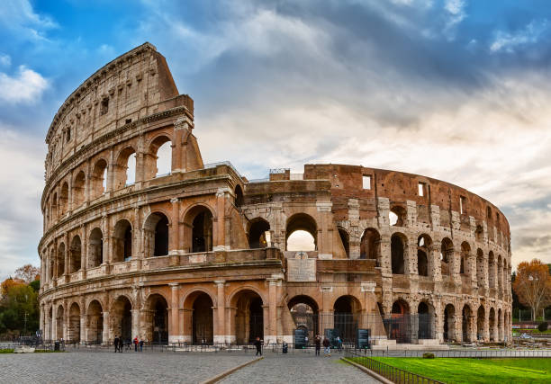
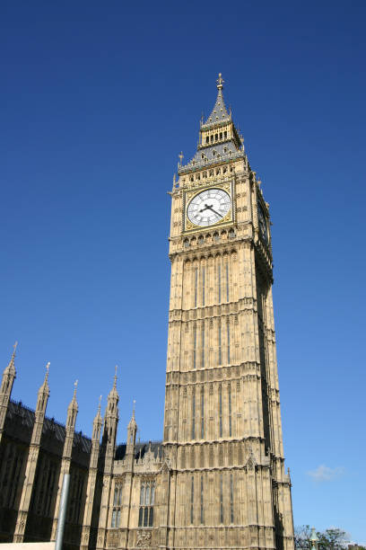
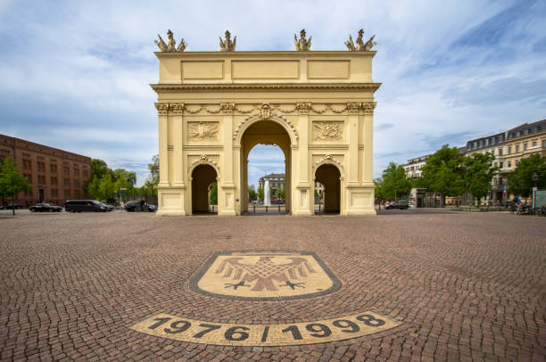
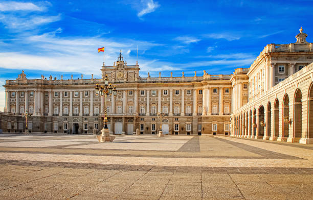

Curiosidades: A Torre Eiffel é um dos monumentos mais famosos do mundo e foi construída para a Exposição Universal de 1889, em Paris. O interessante é que, inicialmente, muitos artistas criticaram sua aparência, mas hoje ela é um dos maiores símbolos da França e recebe milhões de visitantes todos os anos.

Curiosidades: O Coliseu, é um dos maiores anfiteatros já construídos e um dos principais símbolos do Império Romano. Ele era utilizado para espetáculos públicos, como lutas de gladiadores, e podia receber cerca de 50 mil pessoas, mostrando a grandiosidade das obras da época.

Curiosidades: O Big Ben, é um dos pontos mais conhecidos de Londres e fica localizado no Palácio de Westminster. Na verdade, o nome “Big Ben” se refere ao grande sino dentro da torre, e não à torre em si, que hoje é chamada de Elizabeth Tower, sendo um dos pontos turísticos mais visitados da cidade.

Curiosidades: O Portão de Brandemburgo se destaca como uma construção de grande importância histórica e cultural. Erguido no século XVIII, ele já esteve presente em momentos decisivos da história alemã, passando de símbolo de separação a representação da reunificação do país, sendo atualmente um dos pontos mais visitados da cidade.

Curiosidades: O Palácio Real impressiona pela sua arquitetura imponente e pelo papel que desempenha na história da monarquia espanhola. Construído no século XVIII, o edifício ainda é utilizado em cerimônias oficiais e abriga salões luxuosos, além de importantes obras de arte e coleções históricas que representam diferentes períodos da cultura da Espanha.

Curiosidades: O Partenon é um dos templos mais icônicos da Grécia Antiga, localizado na Acrópole de Atenas e dedicado à deusa Atena, protetora da cidade. Construído no século V a.C., ele representa o auge da arquitetura clássica grega e impressiona pela sua harmonia e proporções matemáticas.
Confira abaixo uma comparação entre as principais cidades europeias abordadas neste site, com informações sobre população, país, área e principal monumento de cada uma delas:
| Cidade | País | População (aprox.) | Área (km²) | Principal Monumento | Fundação |
|---|---|---|---|---|---|
| Paris | França 🇫🇷 | 2,1 milhões | 105 km² | Torre Eiffel | Século III a.C. |
| Roma | Itália 🇮🇹 | 2,8 milhões | 1.285 km² | Coliseu | 753 a.C. |
| Londres | Reino Unido 🇬🇧 | 9,0 milhões | 1.572 km² | Big Ben | Século I d.C. |
| Berlim | Alemanha 🇩🇪 | 3,7 milhões | 891 km² | Portão de Brandemburgo | Século XIII |
| Madrid | Espanha 🇪🇸 | 3,3 milhões | 604 km² | Palácio Real | Século IX |
| Atenas | Grécia 🇬🇷 | 3,1 milhões | 412 km² | Partenon | Século V a.C. |
Planejar a viagem na época certa faz toda a diferença! Veja abaixo as estações recomendadas para visitar cada cidade, levando em conta clima, festivais e fluxo de turistas:
| Cidade | Primavera | Verão | Outono | Inverno | Dica Especial |
|---|---|---|---|---|---|
| Paris | ⭐ Ótimo | ✔ Bom | ⭐ Ótimo | ✘ Frio | Primavera — jardins floridos |
| Roma | ⭐ Ótimo | ✘ Muito quente | ⭐ Ótimo | ✔ Ameno | Outono — menos turistas |
| Londres | ✔ Bom | ⭐ Ótimo | ✔ Bom | ✘ Chuvoso | Verão — dias longos e festivais |
| Berlim | ✔ Bom | ⭐ Ótimo | ✔ Bom | ❄ Natal mágico | Inverno — mercados de Natal |
| Madrid | ⭐ Ótimo | ✘ Muito quente | ⭐ Ótimo | ✔ Ameno | Primavera — festas e cultura |
| Atenas | ⭐ Ótimo | ✘ Muito quente | ⭐ Ótimo | ✔ Ameno | Primavera — visitar a Acrópole |